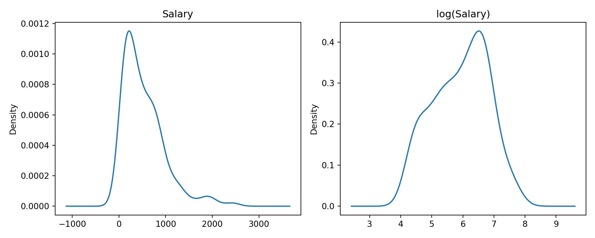

There are several libraries in Python for computing decision trees.
The scikit-learn library is the most widely used implementation for decision trees in Python. It provides comprehensive support for both classification and regression trees through the tree module. The main classes are DecisionTreeRegressor and DecisionTreeClassifier. These implementations follow the CART (Classification and Regression Trees) methodology of Breiman et al. (1984).
Some key features of scikit-learn’s tree implementations include: - Built-in support for cost-complexity pruning - Multiple criteria for measuring split quality (Gini impurity, entropy, MSE) - Handling of missing values through median imputation or custom strategies - Rich visualization options when combined with graphviz - Integration with the broader scikit-learn ecosystem for model selection and evaluation
The lightgbm and xgboost packages also implement decision trees as their base learners, though they are primarily used for gradient boosting rather than single trees. For this document, we’ll focus on scikit-learn as it provides the most straightforward implementation of CART-style trees.
18.2 Regression Trees
Basic Construction
For this application we’ll use the Hitters data on performance and salaries of baseball players in the 1986/1987 seasons. Because the salaries are highly skewed, a log transformation is applied prior to constructing the tree (Figure 18.1).
import numpy as npimport pandas as pdimport matplotlib.pyplot as pltimport duckdbcon = duckdb.connect(database="ads.ddb", read_only=True)hitters = con.sql("SELECT * FROM Hitters;").df().dropna()con.close()fig, (ax1, ax2) = plt.subplots(1, 2, figsize=(10, 4))hitters['Salary'].plot.density(ax=ax1)ax1.set_title('Salary')np.log(hitters['Salary'].dropna()).plot.density(ax=ax2)ax2.set_title('log(Salary)')plt.tight_layout()plt.show()

Figure 18.1: Salaries and log(Salaries) for the Hitters data.
Now let’s fit a regression tree. We’ll use the same features as in the R example but with the scikit-learn implementation:
from sklearn.tree import DecisionTreeRegressorfeatures = ["Years","Hits","RBI","Walks","Runs","HmRun","PutOuts","AtBat","Errors",]X = hitters[features].fillna(0)y = np.log(hitters["Salary"])# Fit a simpler tree with controlled depth and minimum samples per leaft1 = DecisionTreeRegressor( max_depth=3, # Limit tree depth to 3 levels min_samples_leaf=20, # Require at least 20 samples per leaf random_state=87654,)t1.fit(X, y)
In a Jupyter environment, please rerun this cell to show the HTML representation or trust the notebook. On GitHub, the HTML representation is unable to render, please try loading this page with nbviewer.org.
In a Jupyter environment, please rerun this cell to show the HTML representation or trust the notebook. On GitHub, the HTML representation is unable to render, please try loading this page with nbviewer.org.
In a Jupyter environment, please rerun this cell to show the HTML representation or trust the notebook. On GitHub, the HTML representation is unable to render, please try loading this page with nbviewer.org.
In a Jupyter environment, please rerun this cell to show the HTML representation or trust the notebook. On GitHub, the HTML representation is unable to render, please try loading this page with nbviewer.org.
In a Jupyter environment, please rerun this cell to show the HTML representation or trust the notebook. On GitHub, the HTML representation is unable to render, please try loading this page with nbviewer.org.
All tree visualizations in this document use plt.tight_layout() to prevent node overlap, and the figures are sized appropriately to ensure readability. The fontsize parameter in plot_tree is adjusted based on the complexity of the tree.
Figure 18.2: Simplified regression tree for log(salary) with controlled depthFigure 18.5: Final pruned regression tree for Hitters dataFigure 18.9: Classification tree for breast cancer dataFigure 18.11: Classification tree for iris data
Breiman, L., J. H. Friedman, R. A. Olshen, and C. J. Stone. 1984. Classification and Regression Trees. Wadsworth, Pacific Grove, CA.
{kind=link}
{kind=link}
{kind=link}
{kind=link}